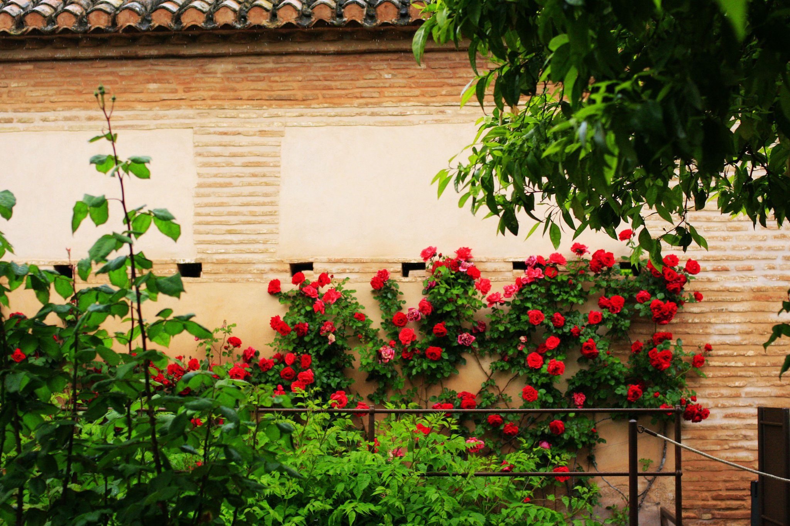

正文: 旅游有可能会改变一个人的人生。我讲我自己的故事吧。
26岁那年，一个人在安达卢西亚坐火车，从Cordoba到Granada的时候，我身边坐着一个美国中年妇女，她突然指着窗外某处荒野上的山坡给我看，说上面有一个Castle，我仔细看了看确实有个Castle，安达卢西亚地区的地貌风光和西班牙北部很不一样，荒凉，野性，还有点神秘感，窗外的风景我看了一个小时都没换过姿势。这个中年妇女问我，“安达卢西亚是不是很美？”我说很美啦，充满魅力。
美国妇女叹了口气，"我终于知道为什么我女儿不愿意回家了。"
接下来十五分钟我听她讲了一个美国纽约少女到西班牙Granada的某学校追求艺术的梦想，最终被西班牙帅小伙和安达卢西亚的美丽风景给留在了当地，再也不愿意回到美国的故事，美国妈妈急了，万里寻女，希望改变她的心意。
"我希望女儿能留在我身边生活，"美国妈妈说，"但是当我到了Granada，我知道我女儿是不会跟我回家啦，我也爱上了这里。"
下车的时候她突然跟我说，小姑娘，到了Granada, 你一定要去Alhambra，你会在那里遇到爱情的，就跟我女儿一样。
我当年是头顶小红帽足蹬运动鞋，穿着很寒酸背包很沉重，一路如风般狂奔，眼中只有风景哪有艳遇。在Granada 只有短暂的半天，当夜要连夜坐夜班火车回巴萨，所以留给阿罕布拉宫的只有短短三四个小时，而且，当天阴天有雨，在Granada火车站又找不到存包的地方，还非常不幸被一只大狗狂追，背着一只15公斤的大包，几乎是连滚带爬满身泥浆地爬上Alhambra...
从哪个角度看，都离艳遇太远了，但是Alhambra惊艳绝伦的美貌，遗世独立的骄傲让已经在欧洲游荡了两周，逛遍了各路宫殿的我震惊了。并不文艺也不懂建筑的我，第一次在独游中产生了如果有人陪我站在这里有多好的愿望。我想要跟他分享我在这里看到的一切。

四月的安达卢西亚简直是一个空气中都流淌着甜美恋爱气息的地方

当我走过Alhambra这个美丽的鲜花回廊的时候，被对面自拍的小情侣虐成狗。。。
故事到这里应该有男主角出现了。。。然而并没有！故事的后半段由我一个人在Alhambra景区的某个咖啡店躲雨并打破自己Fruit Ninja记录结束。
一个人旅游最郁闷莫过于。。没人拍照！只能在我最喜欢的地点留下一张路人照。。。
旅行结束，回来之后，在牌桌上认识一个all in 输给我，不依不挠还在我脸书上各种骚扰的男生。单身嘛，下班一个人蹲家里打online 三国杀打多了也无聊嘛，于是whatsapp上各种有一搭没一搭的聊，并没想单独见面，更加不要说约会了。
说到我刚刚结束的欧洲背包环游，他突然说，诶，我大学暑假在巴黎交换过，也背包一个人逛遍了欧洲。
我说，也是一个人吗？最喜欢最难忘哪里呢？
他说是呀，最喜欢西班牙的安达卢西亚，走遍了欧洲，有一个地方特别难忘，觉得一个人去好可惜，那天是一个人看日落，一个人听吉他，总觉得身边少了点什么。
我突然就想起了在西班牙坐火车时碰到的那个美国妈妈，突然我心就砰砰地跳起来。我问他，是哪里呀？
他发来了这张照片，说，这个地方你陪我一起再去一次，好不好? 一起去旅游之前，明天单独约你一起吃brunch，好不好？
看到这张照片，我就说好，明天几点？
那天一起吃完了brunch，又一起看了电影，看完了电影，又一起逛了街，逛完了街，又一起吃了晚饭，吃完了晚饭，又站在街上聊了好久。
那天好像已经看到了从两张照片里伸出的两只手握在一起，并肩看阿罕布拉宫的夕阳。和自己的少女心谈起了自以为是命中注定的恋爱。
于是这人就成了竹竹爸。
如果我可以选这个故事结束在哪里，我就希望结束在那一天。
旅游就是坐火车遇到一个random的大妈，讲了一个random的故事，在一个random的地方被激发了random的少女心，random地遇到一个random的人，改变了random的结局。
你看人的一生啊，是多么的random。
这个答案留在草稿里好久了，今天把它发了。